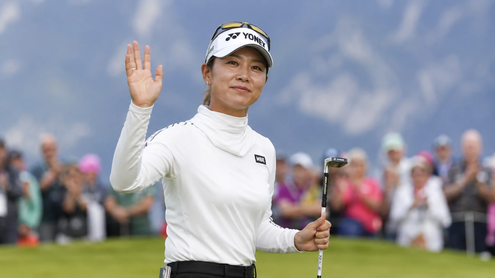

Aki Iwai finished in solo third place at the 2026 Amundi Evian Championship, finishing at 18-under par — just a single stroke behind Brooke Henderson and the red-hot Haeran Ryu, who forced a playoff at 19-under. Despite a rocky Sunday start featuring a bogey on the 1st and a double bogey on the 3rd, Iwai mounted a ferocious back-nine rally with birdies on the 14th and 15th holes. However, a closing par on the 18th left her one shot short of a historic playoff, which Ryu won on the first extra hole to capture her second consecutive major title in 13 days.

The Brutal Math of a Single Shot
Golf is a sport that takes far more than it ever gives. On most Sundays, that reality is just background noise — an accepted tax of professional sports. But when a player stands close enough to feel the cold metal of a major trophy, only to watch it slip away in real time, the emotional toll becomes impossible to hide. Aki Iwai, normally one of the most composed competitors on the LPGA Tour, stood off to the side of the 18th green at Evian Resort Golf Club, visibly choked up and struggling to find her words, while Brooke Henderson and Haeran Ryu boarded carts to head back out for a sudden-death playoff.
The math of Iwai's near-miss is simple and unforgiving. She completed her final round at 18-under par. Henderson reached 19-under with a dramatic eagle on the par-5 18th. Ryu — who spent the entire afternoon grinding out pars without making a single birdie — finally broke through on that same 18th hole to matches Henderson at 19-under. A single swing, a lucky bounce, or one rolled putt is all that separated Iwai from joining them. In major championship golf, the margins are thin, and the history books do not care how well you played for seventeen holes if the eighteenth closes the door on your dreams.
"It is the cruelest element of the game: a week of clinical execution undone by the absolute math of a single stroke."
The Rollercoaster Sunday Card
Sunday did not start like a championship run. Paired in the final group alongside Henderson and the relentless Ryu, Iwai felt the weight of the moment immediately. A bogey on the par-4 1st hole was a cold splash of water, followed by a bounce-back birdie on the par-3 2nd. But the real blow came on the par-4 3rd, where a series of missteps resulted in a double bogey. Two over through three holes, with two shots gone before most of the gallery had finished their morning coffee, the final round threatened to devolve into a rout.
What followed, however, was a masterclass in psychological resilience. Rather than folding under the pressure, Iwai dug in. She clawed back to even for the day before making the turn with consecutive birdies on the 8th and 9th. On a major Sunday, after a start that would have broken lesser players, that turnaround was a testament to her maturing game. Momentum, a highly volatile currency in links-adjacent golf, returned in full force on the back nine. Iwai carded crucial birdies on the par-3 14th and the par-5 15th, thrusting her name right back into the center of the championship conversation.
| Position | Player | To Par | R4 Score | Notes |
|---|---|---|---|---|
| 1ST | Haeran Ryu | −19 | 70 | Won playoff with birdie on 1st extra hole |
| 2ND | Brooke Henderson | −19 | 67 | Eagled the 18th to force playoff |
| 3RD | Aki Iwai | −18 | 71 | Solo third, finished one stroke back |
| T4 | Mao Saigo | −15 | 69 | Four shots out of playoff |
The Cruel Finish on 18
As the final group approached the closing stretch, the tournament was entirely up for grabs. But the final three holes proved to be Iwai's undoing. While she carded solid pars on the 16th and 17th, the par-5 18th — a hole that yielded an eagle to Henderson and a birdie to Ryu — offered no charity to Iwai. A leaked tee shot left her out of position, forcing her to play defensively and ultimately settle for a par. The door slammed shut.
Ryu went on to claim the title with a clinical birdie on the first playoff hole. The victory marks Ryu's second consecutive major championship in just 13 days, following her triumph at the KPMG Women's PGA Championship. While Ryu enters rare air with back-to-back major trophies, the human story of the afternoon belonged to the player who watched from the sidelines.
"I Want Everyone to Know Me"
For a player who came so close to rewriting her career trajectory, one might expect bitterness or frustration. Instead, Iwai showed a level of emotional perspective that standard sports PR cannot manufacture. She spoke warmly about the packed gallery and the thrill of playing in the final group under intense pressure.
"It was so funny; so, I'm so happy because I was able to play in a lot of spectators," Iwai said, her raw, unpolished translation carrying far more weight than a rehearsed corporate script. "I honestly want everyone to know me. So yes, today was also a solid day."
On Sunday, she got exactly what she wanted. A global audience watched her battle back from a disaster start, proving she belongs on the grandest stages in women's golf. A solo third-place finish represents the best major performance of her career, eclipsing her T10 finish at the 2024 Evian and a T7 at the AIG Women's Open later that summer.
A Rising Pattern of Contention
This near-miss was no outlier. Iwai has spent the 2026 season quietly building a resume of elite consistency. Sunday marked her fourth top-10 finish of the year, following a tie for fifth at the Aramco Championship in April and a top-20 finish at the KPMG Women's PGA Championship just two weeks ago. Though her lone LPGA victory remains last season's win in Portland, her trajectory suggests she will be holding a trophy again very soon.
The sting of Sunday is also tempered by the memory of last year's event, where she missed the cut entirely. She had openly talked on Saturday about seeking "revenge" on the course. In a strange way, she got it. She faced down the very layout that had humbled her a year ago and conquered its back nine when the pressure was at its peak.
Next Stop: The AIG Women's Open
Instead of treating the one-shot defeat as a failure, Iwai is viewing the Evian Championship as an expensive, high-value lesson as she looks ahead to the AIG Women's Open at Royal Lytham & Annes.
"Definitely I got confidence," Iwai reflected. "Yeah. Some win, some lose, right? But, yes, good experience for AIG, good lesson."
Golf is a game that breaks players who refuse to bend. The ones who survive are those who treat heartbreak as tuition. Aki Iwai paid a heavy price in France, but she walks away with a bank of confidence that no leaderboard can diminish. She isn't a major champion yet — but after Sunday's fight, she is closer than she has ever been.